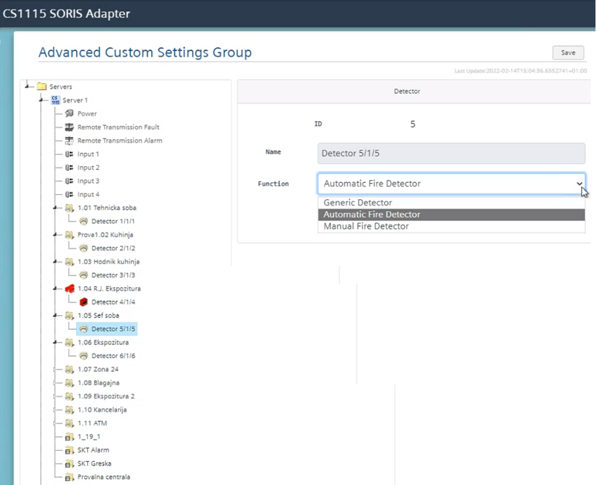

Configure the Fire Objects Functions
- Expand the first server structure to display the list of fire objects.
- In the list, select the first Zone and then choose the Desigo CC Function to associate (Generic, Automatic or Manual).
Repeat this step for the other zones. - Select the first Detector and then choose the Desigo CC Function to associate (Generic, Automatic or Manual).
Repeat this step for the other detectors. - Select Apply.
- Repeat the steps above to configure the functions of more fire panels, as necessary.
- Select Save.
